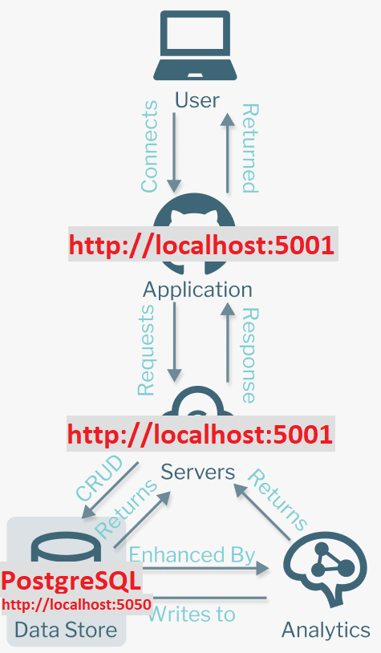

Career Paths
Frontend Dev - “Building what the user can interact with”
- Website Basics (HTML, CSS, JavaScript)
- Website Enhancements (Sass, TypeScript, DOM)
- Frontend Libraries (React, Express, d3.js)
- Frontend Frameworks (Svelte, Angular, Vue)
- State Management (Redux, Context, MobX)
- UX/UI, Web Dev & Browsers (Chrome, Firefox, Opera)
- Static Site Generators (Gatsby, 11ty, Jekyll)
- Headless CMS (Strapi, Cockpit, Directus)
Backend Dev - “Facilitating what the user can interact with”
- Server Side Languages (Java, Python, PHP)
- Server Side Frameworks (Express, Django, Laravel)
- Databases (Relational , Non-Relational, Graph-Based)
- Data Science / Machine Learning (Numpy, Pandas, MatPlotLib, AI)
- Deployment, Servers & DevOps (Heroku, Cloud, Docker, CI/CD, Terraform)
Full Stack
- Combination of Frontend & Backend
- Version Control (Github, SVN)
1. How a user interacts with an application & how the application responds
